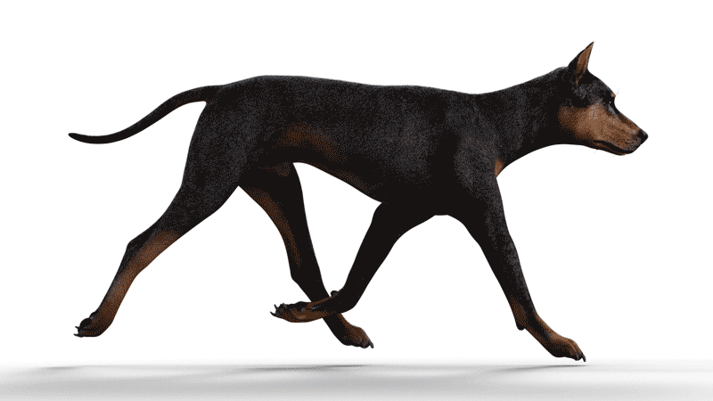
Una narrativa visual interactiva
DOBERMANN
De la vara de un recaudador de impuestos en la Alemania de 1890 a la sombra leal que hoy duerme a los pies de miles de familias. Esta es la historia completa de la raza: origen, cuerpo, temperamento y los cuidados que le debemos.
Origen
El Dobermann nació de una necesidad muy concreta: un hombre que cobraba impuestos en pueblos alemanes necesitaba protección, y decidió criarla él mismo.
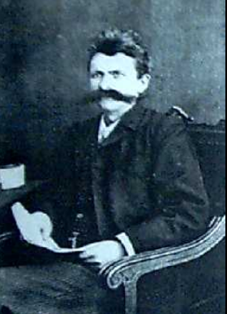
Karl Friedrich Louis Dobermann
Apolda, 1834 – 1894 · fotografía de época
Apolda, Turingia
Alemania central
Apolda está en el estado de Turingia, en el centro de Alemania: a unos 9 km de Weimar, 20 km de Jena y 30 km de Erfurt. En el siglo XIX era conocida por sus fundiciones de campanas y su industria textil — el mismo pueblo donde Dobermann reclutó a sus primeros perros guardianes.
Nace en Apolda, Turingia (Alemania). Con los años trabajará como recaudador de impuestos, guarda nocturno y encargado de la perrera municipal — tres oficios peligrosos que comparten una misma necesidad: un perro de confianza a su lado.
Desde su puesto en la perrera de Apolda, Dobermann elige a los ejemplares más fuertes, intimidantes e inteligentes para que lo acompañen en sus rondas nocturnas cobrando impuestos, a menudo entre gente que no quería pagarle.
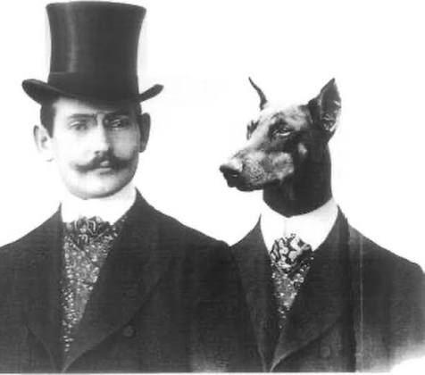
Fotomontaje de época — el humor victoriano también le hizo un lugar a la raza.
Los primeros ejemplares se muestran en el mercado de perros de Apolda. No existe un registro genealógico exacto de los cruces que usó: se cree que combinó Pastor Alemán, Rottweiler, Pinscher Alemán y Weimaraner.
Tras la muerte de Dobermann, Otto Göller — un fabricante de licores aficionado a la raza — funda el primer club oficial y ayuda a fijar por escrito el estándar que hasta entonces solo existía en la práctica.
La raza hace su presentación formal en exhibiciones caninas. Poco después, criadores cruzan la línea con Manchester Terrier y Galgo para afinar la silueta atlética sin perder el temperamento de guardián.
El American Kennel Club reconoce oficialmente la raza. En Norteamérica pierde la segunda "n" del apellido de su creador y pasa a llamarse "Doberman Pinscher"; en el resto del mundo conserva el nombre completo, "Dobermann".
El Cuerpo de Marines de EE. UU. despliega Dobermans como centinelas y mensajeros durante la Segunda Guerra Mundial. Veinticinco mueren en la batalla de Guam y hoy son honrados con un monumento en la isla.
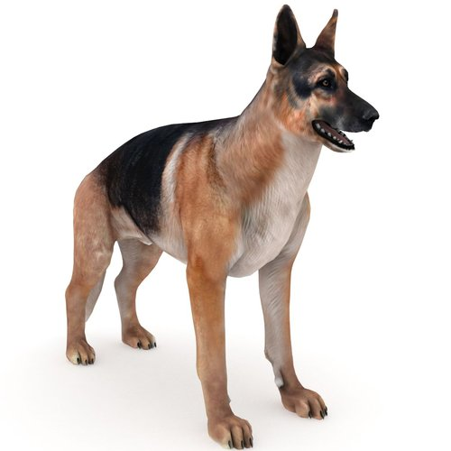
Pastor Alemán
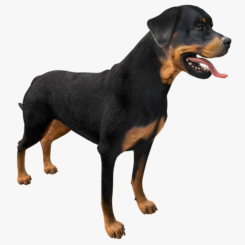
Rottweiler
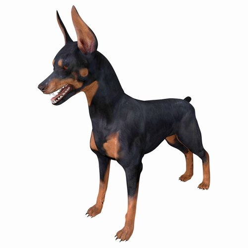
Pinscher Alemán
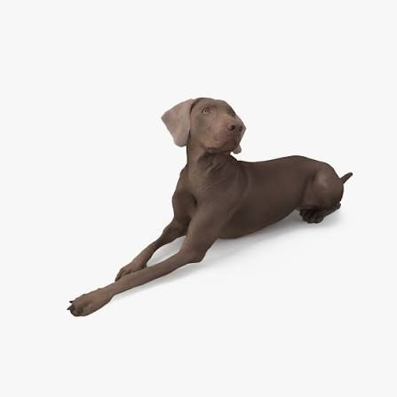
Weimaraner
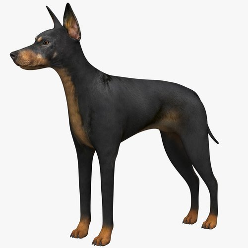
Manchester Terrier
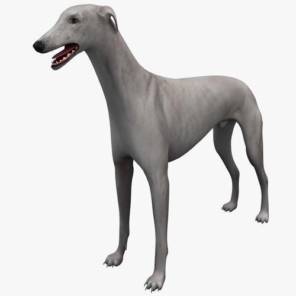
Galgo Inglés
Ningún libro de registro documentó los cruces originales: esta lista se reconstruye a partir de rasgos físicos y de testimonios de criadores de la época.
Anatomía
Un cuerpo diseñado por y para el trabajo: compacto, musculoso y sin un gramo de exceso. Así lo definió el estándar de la raza.
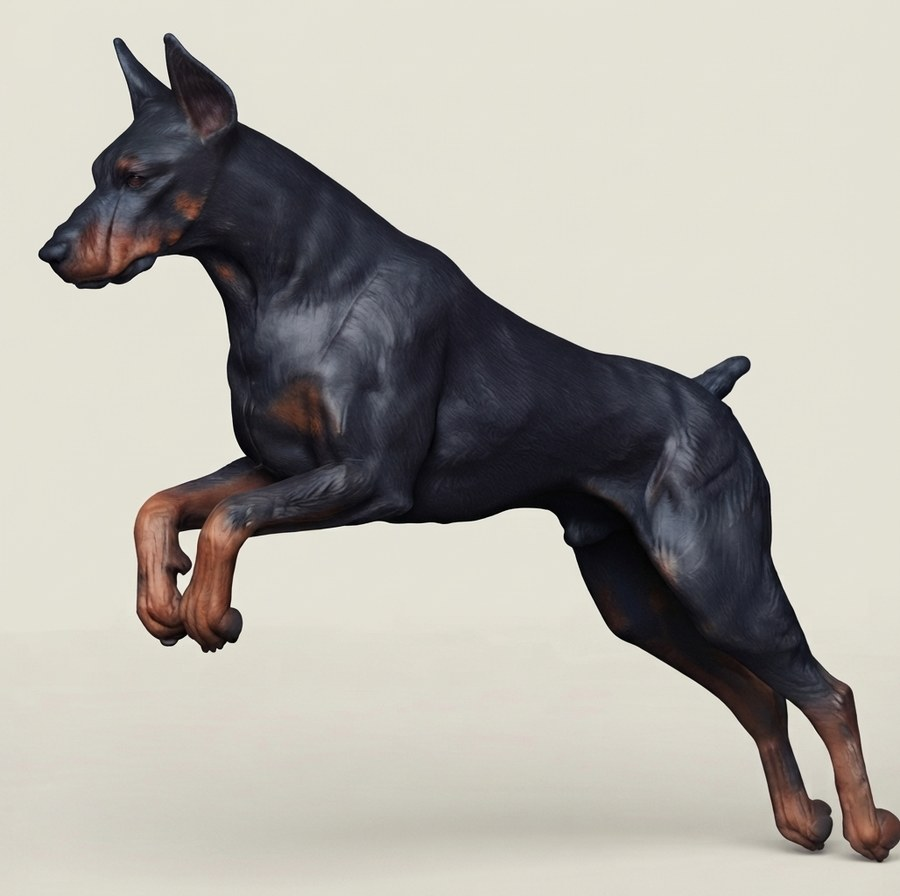
Cabeza y expresión
Hocico largo y profundo con labios firmes, un "stop" bien marcado y ojos almendrados casi negros: la mordida cierra en tijera con 42 dientes.
Orejas
De nacimiento son caídas; el corte quirúrgico para pararlas es una tradición de exhibición cada vez más restringida por ley.
Cuello
Arqueado, musculoso y seco, se afina con elegancia desde los hombros hasta la nuca — una de las líneas más reconocibles de la raza.
Dorso
Corto, firme y con una línea superior recta que no se hunde ni se arquea: es la base de una zancada eficiente.
Pecho profundo
La caja torácica es profunda y estrecha, ideal para correr — pero ese mismo pecho predispone al Dobermann a la torsión gástrica (bloat).
Abdomen recogido
La cintura se estrecha notablemente detrás de las costillas ("tucked-up"): rasgo de un perro criado para la velocidad, no para el fondo.
Cuartos traseros
Muslos potentes y bien angulados que funcionan como el motor de la raza: dan el impulso para acelerar y saltar.
Patas y "calcetines"
Delanteras rectas como columnas, con hueso fuerte. Los puntos color fuego aparecen por un gen de color independiente del tono base.
Cola
Nace larga; tradicionalmente se mochaba a los pocos días de vida. Hoy esa práctica está prohibida en buena parte de Europa y Oceanía.
Orejas y cola: una práctica en retroceso
Tradicionalmente las orejas se recortaban y la cola se mochaba a los pocos días de nacer, para lograr el perfil erguido y compacto del estándar clásico. Esa norma está cambiando región por región:
Genética y evolución
Cada rasgo del capítulo anterior — el color, la silueta, hasta el riesgo cardíaco — está escrito en el ADN. Así es como se leen esos genes, y cómo un siglo de cría dividió a la raza en dos caminos distintos.
Locus D (MLPH) →
El gen TYRP1 decide si el pigmento base es negro o rojizo; el gen MLPH decide si ese pigmento sale "pleno" o diluido a un tono grisáceo. Un tercer gen, el Agouti (ASIP), está fijado en toda la raza: es el que dibuja los puntos "fuego" sobre cejas, hocico, pecho y patas en los cuatro colores por igual.
Un siglo de criterios de cría distintos a cada lado del Atlántico separó al Dobermann en dos tipos reconocibles, sin que sean razas diferentes.
Cuerpo esbelto y elegante, cabeza en cuña más fina, temperamento más calmo. Criada bajo reglas de mercado libre orientadas al ring de exhibición.
Estructura más robusta y musculosa, cabeza y mandíbula más anchas. En Europa un dog debe aprobar un test de temperamento (ZTP) antes de poder reproducirse.
La cardiomiopatía dilatada (capítulo V) está ligada a variantes en dos genes: una deleción en PDK4 y una variante en el gen de la titina (TTN). En un estudio sobre 48 Dobermans con DCM confirmada, así se repartían las variantes:
Guerras mundiales, líneas cerradas y el uso repetido de los mismos "sementales populares" redujeron la diversidad genética de la raza: estudios de la Universidad de California, Davis, encontraron menos variación en el Dobermann que en cualquier otra raza analizada, sin importar si el perro es americano, europeo o asiático.
Iniciativas como el Doberman Diversity Project buscan hoy en día ejemplares de todo el mundo para ampliar ese acervo genético y frenar la acumulación de mutaciones dañinas en las próximas generaciones.
Personalidad
Ninguna raza carga con un malentendido tan grande como este. La ficción de Hollywood hizo el resto.
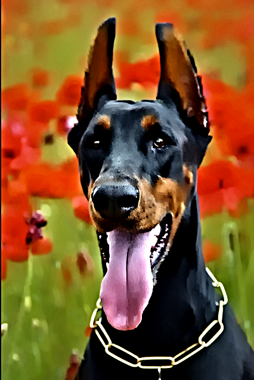
Alerta, no agresivo
"Es un perro peligroso, agresivo por naturaleza, que ataca sin motivo."
Es instintivamente protector, no ofensivo: reacciona ante una amenaza percibida hacia su familia, no busca el conflicto por sí solo.
La agresividad descontrolada casi siempre es resultado de una socialización deficiente o de maltrato — no de la genética de la raza. Consenso citado por criadores y etólogos caninos
Cuidados y salud
Es una raza atlética y por lo general sana, pero con un puñado de condiciones hereditarias que todo cuidador debería conocer de antemano.
Ejercicio
Alta energía física y mental. Necesita paseos largos, carrera y trabajo de obediencia, agility o rastreo diarios; sin estímulo se vuelve destructivo.
Alimentación
Dos comidas al día en lugar de una sola, evitando comederos elevados: reduce el riesgo de torsión gástrica. El omega-3 ayuda a las articulaciones y al corazón.
Pelaje
Corto pero con muda de moderada a abundante. Cepillado regular y baños mensuales bastan para mantener la piel sana.
Entrenamiento
Aprende rápido y disfruta el trabajo mental. Responde mejor al refuerzo positivo constante que a la corrección dura.
Olvida la regla de "un año de perro son siete humanos": es un mito de los años 50 que nunca tuvo base científica. La fórmula que recomienda la AVMA es distinta, y en una raza grande como el Dobermann la etapa senior llega antes que en un perro pequeño.
Fórmula AVMA: año 1 = 15 años humanos, año 2 suma 9 más, y cada año desde el tercero suma 5. Es una guía general, no un diagnóstico: la genética, el peso y la salud individual pesan tanto como el calendario.
La condición más grave de la raza: el músculo cardíaco se debilita y deja de bombear con eficacia. Prevalencia estimada de 5.8% a 7.32%. Cerca de una cuarta parte de los casos muere de forma súbita e inesperada, y la mitad por insuficiencia cardíaca congestiva. Se recomienda ecocardiograma y Holter periódicos desde edad temprana.
Un trastorno genético de la coagulación de la sangre. No suele notarse en el día a día, pero conviene hacer una prueba antes de cualquier cirugía o procedimiento invasivo.
El pecho profundo del Dobermann lo predispone a que el estómago se dilate y, en los casos más graves, se tuerza sobre sí mismo. Es una urgencia veterinaria inmediata; comer en dos tomas y evitar el ejercicio intenso justo después de comer ayuda a prevenirla.
El encaje de la articulación de la cadera no es perfecto y puede derivar en artritis. La raza la presenta con menor frecuencia que otros perros grandes; mantener un peso magro y ejercicio de bajo impacto reduce el riesgo.
Una tiroides poco activa que puede causar aumento de peso, letargo y problemas de piel. Se controla bien con medicación de por vida una vez diagnosticada.
Se manifiesta como chupeteo compulsivo de los flancos u otras conductas repetitivas, con un componente genético y otro de ansiedad o falta de estímulo. El enriquecimiento mental diario ayuda a prevenirlo.
Legado
Del bastón de un cobrador de impuestos alemán a los brazos de una familia cualquiera, el Dobermann jamás dejó de ser lo que fue criado para ser: un guardián. Lo que cambió fue nuestra idea de a quién y qué está dispuesto a proteger. Conocerlo bien — su cuerpo, su historia y sus necesidades reales — es la mejor forma de honrar ese vínculo.
- American Kennel Club — Doberman Pinscher History
- Wikipedia — Dobermann
- Doberman Planet — ¿Son peligrosos los Dobermans?
- PetMD — Doberman Pinscher Breed Health & Care
- Doberman Pinscher Club of America — Breed Standard
- UC Davis Veterinary Genetics Laboratory — Dog Coat Color
- American Kennel Club — Genetic Risk Factors for DCM in Dobermans
- Doberman Planet — American vs. European Doberman
- Doberman Diversity Project — What's the Problem?
Contenido con fines informativos y educativos. Ante cualquier duda de salud o comportamiento de tu propio perro, consulta a un veterinario o etólogo canino certificado.